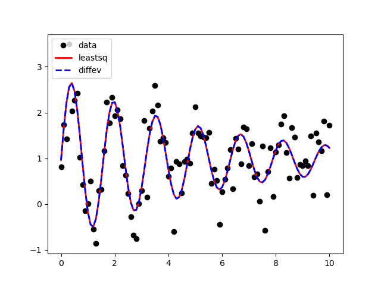

Note
Click here to download the full example code
Fit Using differential_evolution Algorithm¶
This example compares the “leastsq” and “differential_evolution” algorithms on a fairly simple problem.
Out:
# Fit using leastsq:
[[Fit Statistics]]
# fitting method = leastsq
# function evals = 65
# data points = 101
# variables = 4
chi-square = 21.7961792
reduced chi-square = 0.22470288
Akaike info crit = -146.871969
Bayesian info crit = -136.411487
[[Variables]]
offset: 0.96333090 +/- 0.04735921 (4.92%) (init = 2)
omega: 3.98700821 +/- 0.02079710 (0.52%) (init = 3.3)
amp: 1.80253572 +/- 0.19401988 (10.76%) (init = 2.5)
decay: 5.76279857 +/- 1.04073320 (18.06%) (init = 1)
[[Correlations]] (unreported correlations are < 0.100)
C(amp, decay) = -0.755
# Fit using differential_evolution:
[[Fit Statistics]]
# fitting method = differential_evolution
# function evals = 1425
# data points = 101
# variables = 4
chi-square = 21.7961792
reduced chi-square = 0.22470288
Akaike info crit = -146.871969
Bayesian info crit = -136.411487
[[Variables]]
offset: 0.96333133 +/- 0.04735903 (4.92%) (init = 2)
omega: 3.98700854 +/- 0.02121810 (0.53%) (init = 3.3)
amp: 1.80252621 +/- 0.19022409 (10.55%) (init = 2.5)
decay: 5.76284506 +/- 1.00452610 (17.43%) (init = 1)
[[Correlations]] (unreported correlations are < 0.100)
C(amp, decay) = -0.743
import matplotlib.pyplot as plt
import numpy as np
import lmfit
np.random.seed(2)
x = np.linspace(0, 10, 101)
# Setup example
decay = 5
offset = 1.0
amp = 2.0
omega = 4.0
y = offset + amp*np.sin(omega*x) * np.exp(-x/decay)
yn = y + np.random.normal(size=y.size, scale=0.450)
def resid(params, x, ydata):
decay = params['decay'].value
offset = params['offset'].value
omega = params['omega'].value
amp = params['amp'].value
y_model = offset + amp * np.sin(x*omega) * np.exp(-x/decay)
return y_model - ydata
params = lmfit.Parameters()
params.add('offset', 2.0, min=0, max=10.0)
params.add('omega', 3.3, min=0, max=10.0)
params.add('amp', 2.5, min=0, max=10.0)
params.add('decay', 1.0, min=0, max=10.0)
o1 = lmfit.minimize(resid, params, args=(x, yn), method='leastsq')
print("# Fit using leastsq:")
lmfit.report_fit(o1)
o2 = lmfit.minimize(resid, params, args=(x, yn), method='differential_evolution')
print("\n\n# Fit using differential_evolution:")
lmfit.report_fit(o2)
plt.plot(x, yn, 'ko', lw=2)
plt.plot(x, yn+o1.residual, 'r-', lw=2)
plt.plot(x, yn+o2.residual, 'b--', lw=2)
plt.legend(['data', 'leastsq', 'diffev'], loc='upper left')
plt.show()
Total running time of the script: ( 0 minutes 0.206 seconds)